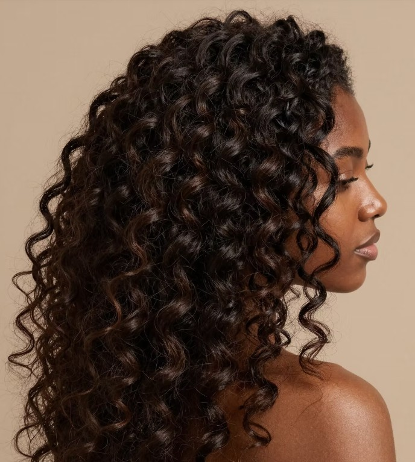
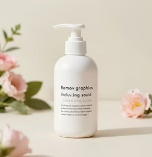
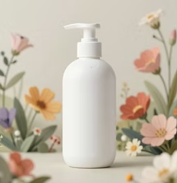
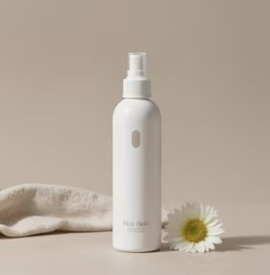

Healthy hair doesn't only grow from foods, but from the way you treat it. Using heat constantly and leaving hair wet overnight can cause brittleness and breakage to your hair strands. To prevent these problems, we have created a guide to help you care for your specific hair type. Strong hair starts with the right habits. Learn the most important routines that protect, nourish, and strengthen your natural hair.


The beginning of any routine. Gently removes dirt and oils that are greasing your hair and helps make your hair refreshed.

Restores moisture, shine, and softness. Helps prevent dryness and improves smoothness.
Keep your strands deeply hydrated. Oil treatments help retain elasticity and prevent brittle ends.

Shield your hair from heat, sun, and environmental stress. A final layer of protection ensures lasting health.
Remember to switch your products every season since your hair gets used to the same products and they may stop benefiting your hair. Seasonal adjustments help maintain stronger and healthier strands.